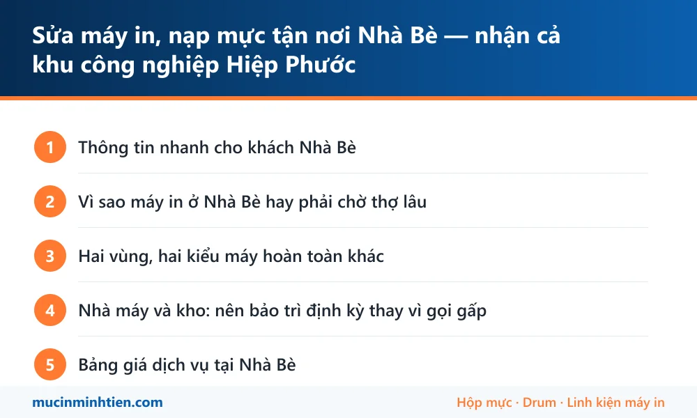

Sửa máy in, nạp mực tận nơi Nhà Bè — nhận cả khu công nghiệp Hiệp Phước
Minh Tiến nhận sửa máy in và nạp mực tận nơi khu vực Nhà Bè — xã Nhà Bè (Phú Xuân, Nhơn Đức, Phước Kiển cũ) và xã Hiệp Phước gồm khu công nghiệp, cảng, kho bãi. Đây là địa bàn xa nên bên mình đi theo tuyến: đặt lịch trước nửa buổi là hẹn được giờ chắc chắn, kỹ thuật viên mang đủ vật tư cho cả máy laser, máy phun, máy in mã vạch và máy in phiếu.
Thông tin nhanh cho khách Nhà Bè
| Hạng mục | Chi tiết |
|---|---|
| Cách đặt lịch | Đặt trước nửa buổi hoặc trước một ngày — bên mình gom tuyến Quận 7 xuống Nhà Bè nên hẹn được giờ cụ thể, không để khách chờ mơ hồ |
| Khu vực nhận | Xã Nhà Bè (Phú Xuân, Nhơn Đức, Phước Kiển, Long Thới cũ) và xã Hiệp Phước gồm KCN, cảng, kho bãi |
| Trục đường hay đi | Nguyễn Hữu Thọ, Lê Văn Lương, Huỳnh Tấn Phát, Nguyễn Bình — từ Quận 7 xuống KCN Hiệp Phước khoảng 45–60 phút |
| Loại máy nhận | Máy laser và đa năng văn phòng nhà máy, máy in mã vạch dán thùng, máy in phiếu cân xe, máy in kim nhiều liên |
| Làm được tại chỗ | Nạp mực, thay drum – gạt – trục từ, vệ sinh máy, xử lý kẹt giấy, cài driver, nối máy in qua mạng nội bộ nhà máy |
| Nhiều máy một lần | Nhà máy, kho có 3 máy trở lên nên gộp một buổi kiểm tra toàn bộ — rẻ hơn và không phải chờ nhiều lần |
Vì sao máy in ở Nhà Bè hay phải chờ thợ lâu
Nhà Bè nằm xa trung tâm, mật độ cửa hàng kỹ thuật thấp hơn hẳn các quận nội thành. Phần lớn đơn vị nhận ca ở đây theo kiểu có tiện đường thì ghé, nên khách gọi buổi sáng mà chiều tối mới có người tới là chuyện thường.
Bên mình làm khác: gom tuyến. Các ca Nhà Bè và Hiệp Phước được xếp chung một chuyến đi từ Quận 7 xuống, hẹn giờ cụ thể với từng khách trên tuyến đó. Đổi lại, khách cần đặt trước nửa buổi thay vì gọi là đi ngay như trong nội thành. Cách này giúp giờ hẹn chính xác và không phát sinh phụ phí đi lại vô lý.
Ca thật sự gấp — máy in phiếu cân ngừng giữa ca sản xuất, máy in vận đơn chết trước giờ cắt đơn — thì báo rõ khi gọi, bên mình tách chuyến riêng và nói thẳng chi phí trước.
Hai vùng, hai kiểu máy hoàn toàn khác
Xã Hiệp Phước — khu công nghiệp, cảng và kho bãi. Đây là nhóm khách chính ở Nhà Bè. Máy ở đây gồm máy laser văn phòng nhà máy, máy in mã vạch dán thùng hàng, máy in phiếu cân xe tải và máy in kim in nhiều liên. Đặc điểm chung: chạy khối lượng lớn, môi trường nhiều bụi và ẩm do gần sông, và hỏng là dây chuyền phải dừng chứ không chỉ chậm việc giấy tờ. Bệnh hay gặp là đầu in mã vạch mòn, quả đào và bố thắng bám bụi, lô sấy bẩn gây kẹt giấy liên tục.
Xã Nhà Bè — khu dân cư Phú Xuân, Nhơn Đức, Phước Kiển. Chung cư, nhà phố, trường học, phòng khám và văn phòng công ty nhỏ. Máy để bàn Canon, HP, Brother và máy phun Epson. Bệnh phổ biến là hết mực, in mờ, kẹt giấy, và máy phun tắc đầu phun do để lâu không dùng.
Khi gọi, chỉ cần nói máy đặt trong nhà máy hay trong văn phòng, kỹ thuật viên sẽ mang đúng nhóm vật tư — hai vùng này cần hai bộ đồ nghề khác nhau.
Nhà máy và kho: nên bảo trì định kỳ thay vì gọi gấp
Với doanh nghiệp trong KCN Hiệp Phước, gọi thợ lúc máy đã chết luôn là phương án đắt nhất: vừa mất thời gian chờ, vừa dừng việc, vừa thường phải thay linh kiện lớn vì đã để quá hạn.
Gói bảo trì định kỳ làm gọn hơn nhiều:
- Kỹ thuật viên tới theo lịch cố định, kiểm tra toàn bộ máy trong một buổi.
- Vệ sinh bộ kéo giấy, cụm sấy, đầu in mã vạch; thay vật tư đã tới hạn trước khi nó gây sự cố.
- Ghi lại tình trạng từng máy để lần sau biết cái nào sắp phải thay gì — doanh nghiệp chủ động được ngân sách.
- Có sẵn danh sách vật tư dự phòng cho những model quan trọng, tránh trường hợp phải chờ hàng.
Chi phí báo theo số lượng máy, thường rẻ hơn tổng các lần gọi lẻ trong năm. Xuất hoá đơn VAT đầy đủ cho doanh nghiệp.
Nạp mực ở Nhà Bè: gộp đơn theo chuyến cho đỡ chờ
Nhà Bè xa trung tâm nên cách làm khác các quận: nạp mực, đổ mực hay thay mực máy in đều nhận, nhưng đi theo chuyến chứ không chạy lẻ từng ca.
Thực tế hay gặp: khách gọi vì hết mực một máy, kỹ thuật viên xuống tới nơi mới phát hiện thêm hai máy khác cũng sắp cạn và một máy kẹt giấy. Nên khi đặt lịch, anh chị kiểm giúp một lượt cả phòng:
- Máy nào đang báo sắp hết mực.
- Máy nào in ra bị mờ, có sọc, hay kẹt giấy.
- Máy nào lâu rồi chưa vệ sinh.
Báo hết trong một lần là kỹ thuật viên mang đủ vật tư xuống, làm gọn trong một chuyến — khách không phải chờ lần hai, mà chi phí cũng gọn hơn.
Bảng giá dịch vụ tại Nhà Bè
| Hạng mục | Áp dụng cho | Giá tham khảo |
|---|---|---|
| Nạp mực hộp mực laser | HP, Canon, Brother phổ thông | 80.000 – 150.000 đ |
| Bơm mực máy in phun | Epson, Canon dòng phun | từ 60.000 đ/màu |
| Vệ sinh máy in tận nơi | Máy trong nhà máy, kho nhiều bụi | từ 100.000 đ |
| Thay gạt mực, trục từ | Bản in sọc hoặc mờ dần | từ 34.000 đ |
| Thay trống (drum) | Vệt lặp theo chu kỳ | từ 120.000 đ |
| Thay quả đào, bố thắng | Máy nhai giấy, không kéo giấy | từ 90.000 đ |
| Thay ruy băng máy in kim | Máy in phiếu nhiều liên | Kiểm tra rồi báo giá |
| Bảo trì định kỳ nhiều máy | Nhà máy, kho, văn phòng KCN | Báo giá theo số lượng máy |
Giá vật tư lấy đúng theo kho — xem bảng giá 773 mã. Kỹ thuật viên kiểm tra và báo giá trước khi làm; khách đồng ý mới thay.
Vật tư mang sẵn theo xe khi tới Nhà Bè
Vì địa bàn xa, xe đi tuyến Nhà Bè mang dư vật tư để không phải quay lại lần hai:
| Vật tư mang theo | Dùng cho | Ghi chú |
|---|---|---|
| Hộp mực laser phổ thông | 12A, 85A, 35A, CF226A, 337, TN-2380 | <a href="../../muc-in/">Tra theo mã mực</a> trước khi gọi cho nhanh |
| Drum, gạt, trục từ, bao lụa | Thay lẻ cho máy chạy nhiều | Gạt từ 40.000đ, trục từ từ 34.000đ, bao lụa từ 80.000đ |
| Quả đào, bố thắng, con lăn | Máy kho hút bụi nhiều, hao nhanh nhất | Thay theo cặp cho bền |
| Ruy băng máy in kim | Máy in phiếu cân, phiếu giao hàng | Đọc mã ruy băng trên hộp cũ khi đặt lịch |
| Mực Epson 003, 664 | Máy phun ở văn phòng và khu dân cư | Kèm bộ vệ sinh đầu phun |
| Bộ vệ sinh chuyên dụng | Thổi bụi, lau gương quang, vệ sinh đầu in | Đi kèm gói bảo trì định kỳ |
Lỗi hay gặp ở Nhà Bè và bài hướng dẫn tự xử lý
Nhiều ca chỉ cần làm theo bài là xong, không phải gọi thợ. Đọc trước cho đỡ tốn tiền:
- Máy in không kéo giấy — bụi kho làm quả đào chai mặt
- Máy in bị sọc ngang: bảng chu kỳ lặp — đo khoảng cách vệt là ra đúng bộ phận
- Máy in bị lem mực — cụm sấy bẩn hoặc bao lụa rách
- Vệ sinh đầu phun Epson — máy phun văn phòng để lâu không dùng
- Cách cài đặt và chia sẻ máy in qua mạng LAN — nối máy in dùng chung trong mạng nhà máy

trueCâu hỏi thường gặp — khách Nhà Bè
Nhà Bè xa vậy có nhận không, có tính thêm phí không?
Đặt lịch trước bao lâu thì chắc chắn có người?
Nhà máy trong KCN Hiệp Phước cần thủ tục ra vào, xử lý thế nào?
Có nhận máy in mã vạch và máy in phiếu cân không?
Công ty có nhiều máy, làm sao cho đỡ tốn?
Có xuất hoá đơn VAT cho doanh nghiệp không?
Nạp mực máy in Nhà Bè giá bao nhiêu, có tính phí đi xa không?
Nhà Bè đặt lịch buổi sáng thì chiều có người xuống không?
Khu vực phục vụ khác
- Sửa máy in, nạp mực tận nơi Quận 7 — có mặt trong 45–60 phút
- Nạp mực máy in Phú Mỹ Hưng — tận nơi, quen thủ tục toà nhà
- Nạp mực, sửa máy in tận nơi Quận 4 — sát trung tâm, tới nhanh
- Sửa máy in, nạp mực tận nơi Bình Chánh — Trung Sơn, Bình Hưng, Vĩnh Lộc
- Sửa máy in, nạp mực tận nơi Quận 8 — có mặt 30–45 phút, báo giá trước
- Sửa máy in, nạp mực tại phường Chánh Hưng — tới trong 30 phút
- Sửa máy in, nạp mực xã Hiệp Phước và khu công nghiệp Hiệp Phước